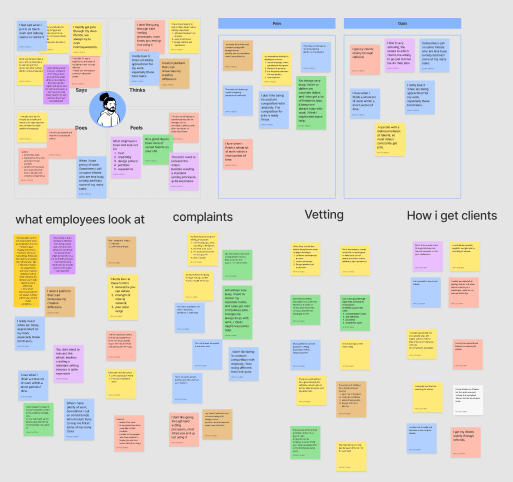
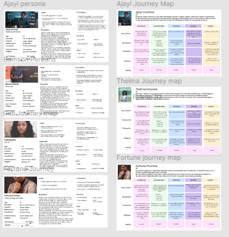
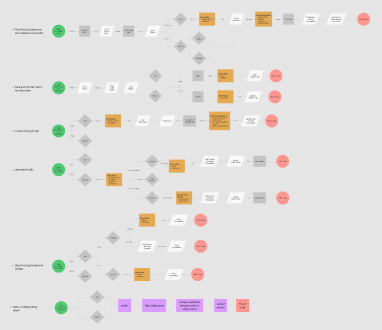

Trust is outsourced to referrals. Referrals repeatedly replaced formal vetting, especially among startups and non-corporate clients. When trust already exists socially, decision friction reduces dramatically.
Product strategy research that uncovered a deeper market problem:
digital hiring is constrained less by talent scarcity and more by trust friction.
Droomwork sought to realign its product strategy with actual market behavior.
Initial assumptions framed the opportunity as a talent supply problem. Research revealed a more important constraint: trust, validation, and hiring confidence are the real market bottlenecks.
Digital hiring environments often assume that connecting talent to opportunity is primarily a discovery challenge.
But for emerging talents, startups, and recruiters, the real friction begins earlier: Who can be trusted? How can credibility be assessed quickly? How can hiring risk be reduced without expensive or rigid vetting?
Droomwork needed to understand whether the opportunity was truly marketplace inefficiency — or something deeper.
The study explored behavioral patterns across digital freelancing, sourcing, vetting, and project decision-making.
Assumption
The market gap is not only a talent-supply problem. It is fundamentally a credibility problem.
Clients struggle to know who to trust. Emerging talents struggle to prove readiness.
Three recurring behavioral patterns shaped the strategic direction.
Trust is outsourced to referrals. Referrals repeatedly replaced formal vetting, especially among startups and non-corporate clients. When trust already exists socially, decision friction reduces dramatically.
Communication is the first hiring filter. Clients evaluate responsiveness, communication clarity, and collaboration ease before technical output. Hiring decisions begin with perceived ease of working together.
Proof drives decisions, not promises. Portfolio quality, experience visibility, timelines, and prior outcomes consistently shaped hiring confidence. Users want visible reliability signals.
The research reframed Droomwork's opportunity.
The business was not building another generic talent marketplace. It was positioned to create a trust-native infrastructure for digital hiring.
Talent marketplace
Trust and validation system
Three product pillars to build a trust-native hiring ecosystem.
Design discovery around real-world recommendation behavior. Help users discover trusted talent through visible referrals and network recommendations.
Allow users to validate readiness through simple communication, technical, and soft-skill assessments.
Make credibility visible and transferable across profiles — referral history, portfolio proof, collaboration records, and communication readiness.
The proposed system reduces uncertainty for both sides of the hiring marketplace.



Reduced hiring uncertainty
Faster trust formation
Better discovery for emerging talent
Stronger product differentiation in crowded marketplaces
Markets often disguise their real constraints.
What appears to be a supply problem is sometimes a confidence problem. Product strategy becomes stronger when teams stop optimizing for assumed behavior and start designing around real decision patterns.
Have a project in mind? I bring strategic research and service design into your next initiative. Let's have a conversation about what's possible.
Start a Conversation